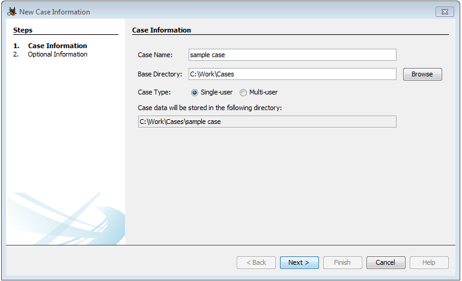
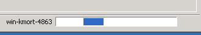
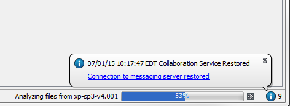
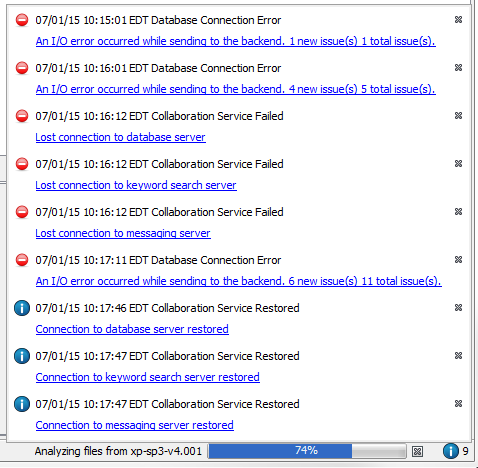

Creating Multi-user cases
Multi-user cases allow multiple instances of Autopsy to have the same case open at the same time. When creating a case, users are presented with a choice of Single-user or Multi-user as shown in the screenshot below.

To create a multi-user case, the following must occur:
- The network services must be installed, configured, and running. See Cluster Installation and Configuration.
- The Case folder needs to be in a shared folder that all other clients can also access at the same path (UNC or drive letter).
- The data sources that are added with the Add Data Source wizard must be in a shared folder that all clients can access at the same path.
Other Multi-user Information
- When using a multi-user case, other nodes could be running data ingest on the same case. While this is happening, you will see a progress bar labelled with the hostname of the machine performing the ingest on the bottom right of Autopsy. The progress bar will continue to move back and forth until ingest has been completed or cancelled. You can still run ingest on your local machine while this is ongoing. This is shown in the screenshot below.

- When issues occur, there is an information "bubble" on the bottom right of the screen. It has an "i" inside a circle, with the color of the circle changed based upon the message. It uses red for bad and blue for good. See the screenshot below.

- Clicking on the information "bubble" brings up the list of prior notifications that have not been dismissed by clicking on the "x". As you can see in the screenshot below, the network cable was unplugged from the machine and it lost all connection to the three services. When the cable was reconnected, it found the services again.

- When creating multi-user cases, we recommend using UNC paths to specify drive names. Drive mapping will work, but it is sometimes difficult to get all the machines participating in a case to map to the same drive letters for the same resources. It is much simpler to use fully-specified UNC paths in the form of \\hostname\sharename\folder.